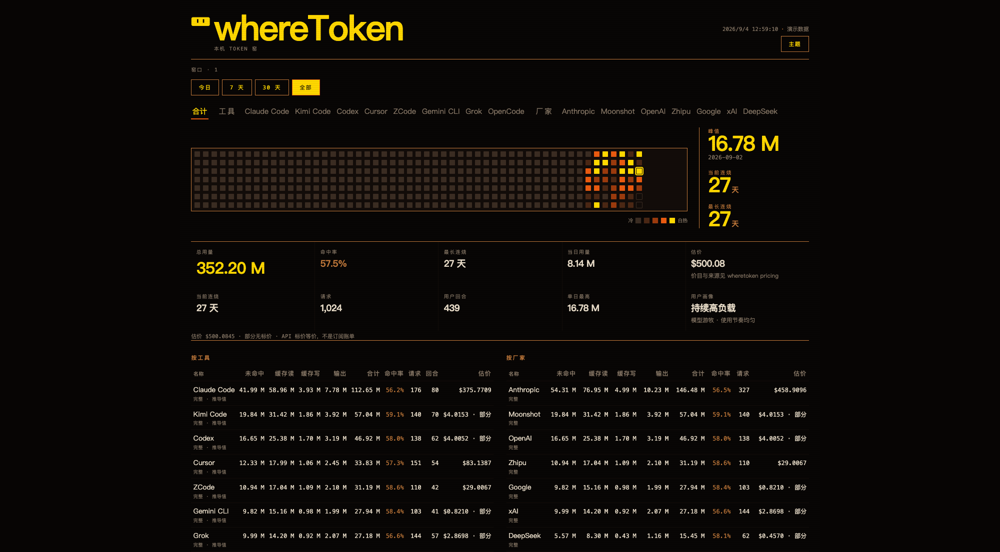
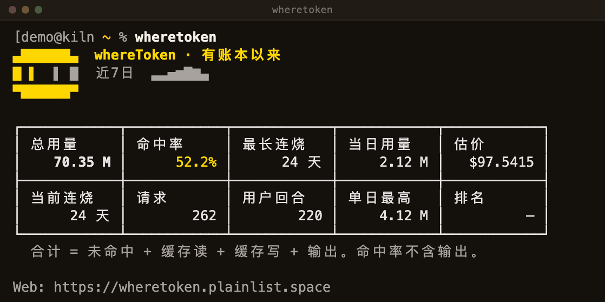

A local-first CLI that reads the usage ledgers your AI coding agents already write on your machine — Claude Code, Kimi Code, Codex, Cursor, ZCode and ten more — and answers three questions honestly: how many tokens, how much cache reuse, and what it would cost at public list prices. Missing usage is shown as unavailable, never as a fake zero.
# macOS / Linux brew tap rainhuang0220/wheretoken && brew install wheretoken # or with Go go install github.com/rainhuang0220/whereToken/cmd/wheretoken@latest wheretoken # the kiln table wheretoken serve # dashboard at http://127.0.0.1:8787

CLI table, JSON and a local dashboard across 15 agents: per tool, vendor, model, workspace and session.
Total = miss + cache read + cache write + output. Hit rate never includes output. Reasoning is tracked, never double-charged.
Estimates come only from vendors' public price cards — Anthropic, OpenAI, Moonshot, Z.ai, DeepSeek, xAI, Google, MiniMax. Unknown rate = “unavailable”, never $0. The estimate is model-level: per-vendor, per-model tokens and unit rates roll up into one total, with the full breakdown a click away on the dashboard or via wheretoken pricing --usage. wheretoken pricing prints every model's rate, its official source page, and when a maintainer last verified it.
Daily kiln wall, longest and current streaks, peak day — a 2×5 KPI readout of how you actually burn. Its last cell is a deterministic usage portrait (用户画像) computed locally from your own numbers: bucketed traits, a fixed phrase bank, no ML, no network. No data shows —, never a fake label.
Local JSONL / SQLite ledgers are read read-only; Cursor usage comes from its account API with your local login. The full capability matrix lives in docs/provider-matrix.md.
